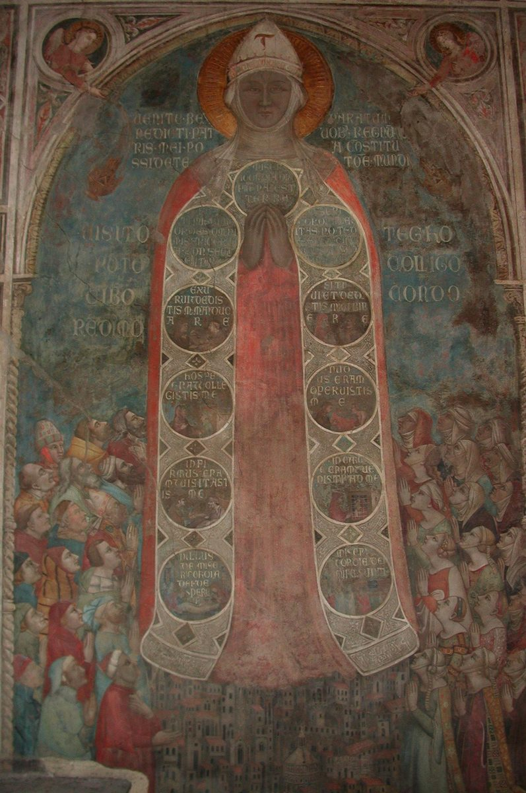
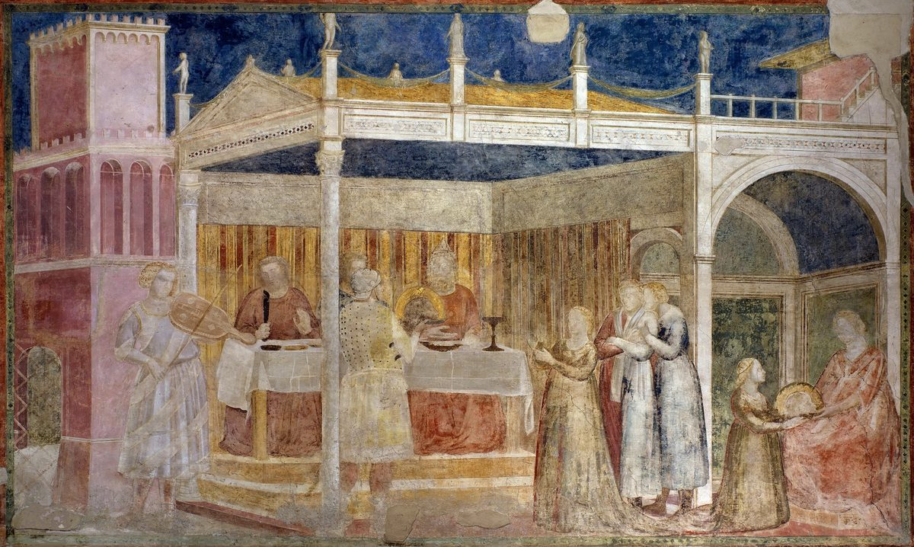
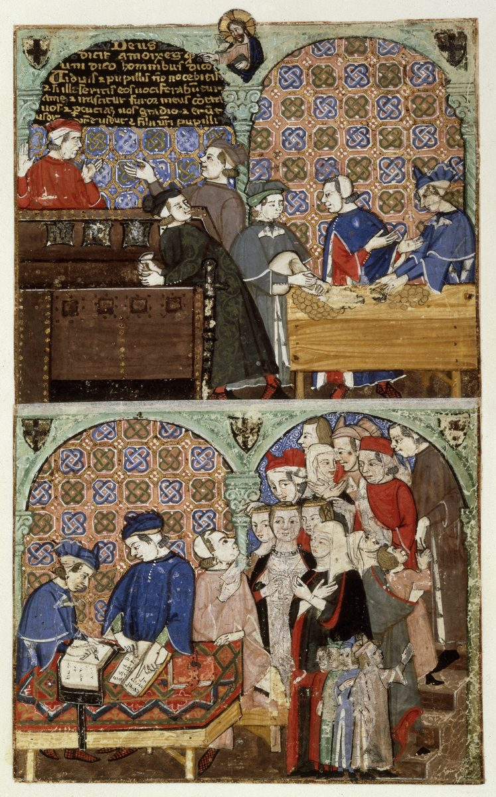
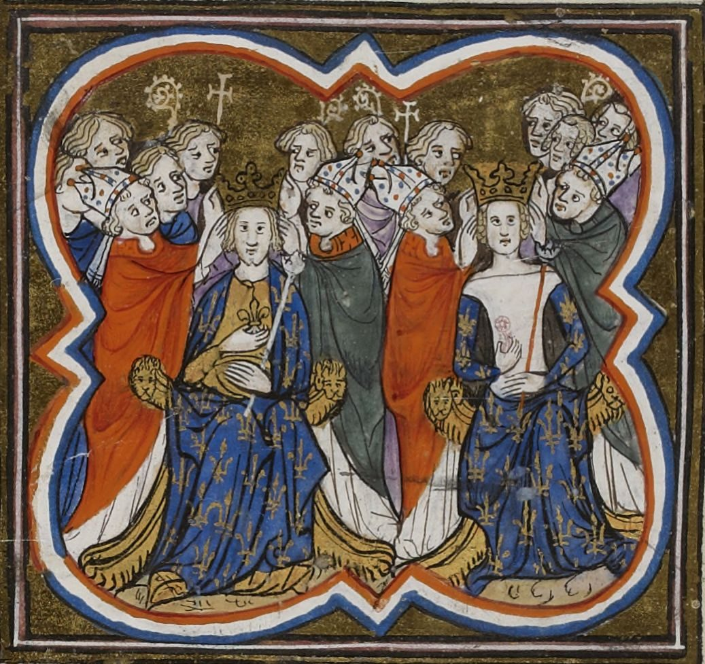
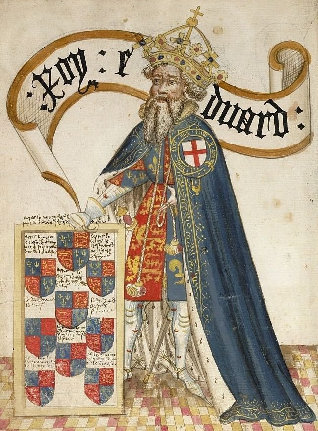

Imagina que tu banco le presta dinero a tu vecino para pleitear contigo, y a ti para pleitear con él. Suena a buen negocio: gane quien gane, el banco cobra. Hace casi setecientos años, dos familias de Florencia pensaron algo parecido. Y descubrieron que en una guerra el que presta no siempre es el que manda.
Florencia, la ciudad que prestaba a los reyes
A principios del siglo XIV, Florencia era una de las ciudades más grandes de Europa, con más de cien mil vecinos, y tenía un poder enorme. Sus compañías de mercaderes tenían agentes en todas las ciudades importantes de Europa. Cobraban los impuestos del papa, comerciaban con lana y paño, y prestaban dinero a quien lo necesitara. Y quien más lo necesitaba eran los reyes.

Dos de esas compañías destacaban por encima de todas: los Bardi y los Peruzzi. Fueron las mayores casas de banca que había visto la Europa medieval. Prestaban a los reyes de Inglaterra, a los de Francia y a los de Nápoles. La moneda de su ciudad, el florín de oro, era de oro fino y nunca se rebajó, y por eso se aceptaba en todas partes.

Los Bardi conocían bien Inglaterra. Entre 1290 y 1326 ya habían adelantado a sus reyes más de 72.000 libras. Y sabían también que el negocio tenía riesgo: otra familia florentina, los Frescobaldi, había caído en desgracia en Inglaterra en 1311, cuando el ambiente se volvió contra los banqueros extranjeros. Los Bardi ocuparon su sitio.
1337: la guerra llama a la puerta
En 1337 empezó la guerra entre Inglaterra y Francia, la que hoy llamamos guerra de los Cien Años. El rey inglés, Eduardo III, necesitaba barcos, soldados y aliados, y para eso necesitaba dinero. Mucho.
Los Bardi y los Peruzzi se lo dieron. Desde ese año empezaron a actuar juntos, y en 1340 ya era costumbre. Ese año llegaron a pagar entre los dos la casa del rey: 2.000 marcos al mes para la comida de su familia y el sueldo de sus criados. De cada cinco marcos, tres los ponían los Bardi y dos los Peruzzi. A cambio, el rey les cedía impuestos sobre la lana y otras rentas futuras. Es decir, les pagaba con promesas.

El otro rey también quería su parte
Mientras tanto, el rey de Francia, Felipe VI, veía cómo los mismos banqueros financiaban a su enemigo. Su respuesta fue rápida: mandó detener a los representantes de las compañías florentinas en Francia. El precio de su libertad fueron grandes préstamos a la corona francesa.

Así que, en la misma guerra, el mismo dinero florentino estaba en los dos bandos. Uno lo había pedido. El otro lo había arrancado.
El rey que nunca dijo «no pago»
Eduardo III nunca anunció que dejaba de pagar. Hizo algo más discreto: revisar las cuentas, una y otra vez. Sus comisarios discutieron las cifras, las rebajaron mucho después de varias auditorías y, al final, ni siquiera lo que el propio rey reconocía deber se pagó.

Los Peruzzi quebraron en 1343. Los Bardi aguantaron hasta 1346. El cronista florentino Giovanni Villani, que vivió aquello, escribió que el rey inglés les debía 600.000 florines a los Peruzzi y 900.000 a los Bardi.
Ojo con esas cifras. El historiador Edwin Hunt las revisó y sostiene que las compañías no tenían recursos para haber prestado tanto. Además, Florencia vivía entonces su propia crisis, con revueltas y otros deudores que tampoco pagaban. Pero Hunt no niega lo esencial: los préstamos existieron y el rey no los devolvió.
El patrón que se repite
La historia de los Bardi y los Peruzzi es uno de los primeros grandes casos documentados de un patrón que volveremos a ver muchas veces. No hubo oro escondido ni una bóveda vacía. Hubo algo más sencillo: unos banqueros confiaron en que un rey cumpliría su palabra, y la palabra se quedó en el papel.
Cuando prestas a los dos bandos de una guerra, no estás a salvo gane quien gane. Estás en manos de los dos.
El que tiene el ejército decide cuándo paga, cuánto paga y si paga. El que tiene el dinero solo puede esperar.
¿Y hoy?
Hoy los Estados siguen pidiendo prestado, y los bancos siguen prestándoles. Y la pregunta de 1343 sigue en pie: si el que más debe es el que pone las normas, ¿quién acaba pagando el pato cuando no paga?
Esta historia forma parte de la serie «La historia del dinero». Si quieres ver cómo la confianza pasó de los reyes a los billetes, sigue con «Cuando el dinero pasó a basarse en la confianza».
Fuentes
- Préstamos de los Bardi a los reyes de Inglaterra entre 1290 y 1326 (72.631 libras), caída de los Frescobaldi en 1311, Florencia y sus compañías como banqueros del papa y de los reyes de Inglaterra, Francia y Nápoles, florín de oro fino nunca rebajado, actuación conjunta desde 1337 y costumbre establecida en 1340, pago de la casa del rey desde el 1 de junio de 1340 (2.000 marcos al mes: 1.200 los Bardi y 800 los Peruzzi) con cesión de impuestos, detención de los representantes florentinos en Francia y préstamos forzados a Felipe VI en 1337, auditorías de las cuentas, revueltas en Florencia en 1343 y deudas impagadas del rey de Nápoles: Ephraim Russell, «The societies of the Bardi and the Peruzzi and their dealings with Edward III, 1327-45», en George Unwin (ed.), Finance and Trade under Edward III, Manchester, 1918. British History Online. https://www.british-history.ac.uk/manchester-uni/london-lay-subsidy/1332/pp93-135, consultado el 21 de noviembre de 2026.
- Eduardo III no repudió formalmente la deuda (auditorías y rebajas, y lo reconocido nunca se pagó) y crítica del tamaño de las cifras de Villani: Edwin S. Hunt, «A New Look at the Dealings of the Bardi and Peruzzi with Edward III», The Journal of Economic History, resumen y nota 2. https://www.cambridge.org/core/journals/journal-of-economic-history/article/abs/new-look-at-the-dealings-of-the-bardi-and-peruzzi-with-edward-iii/2AD04842FACDAE9D0A660EDCD72EC097, consultado el 21 de noviembre de 2026.
- Bardi y Peruzzi como las mayores compañías de la Europa medieval, cifras de Villani (600.000 florines Peruzzi en 1343, 900.000 Bardi en 1346) y quiebras de 1343 y 1346: Edwin S. Hunt, The Medieval Super-Companies, Cambridge University Press, 1994, introducción. https://www.cambridge.org/core/books/abs/medieval-supercompanies/introduction/ED84CB6808B41CFE1D63A8C924F4A0D5, consultado el 21 de noviembre de 2026.
- Población de Florencia (unos 120.000 habitantes hacia 1338, una de las mayores ciudades de Europa occidental): William R. Day Jr., «The population of Florence before the Black Death: survey and synthesis», Journal of Medieval History, vol. 28, n.º 2, 2002. https://www.sciencedirect.com/science/article/abs/pii/S0304418102000027, consultado el 21 de noviembre de 2026.
- Imágenes, todas de Wikimedia Commons: cabecera, detalle de la vista de Florencia del fresco de la Misericordia del Bigallo, 1342 (dominio público) https://commons.wikimedia.org/wiki/File:Madonna_bigallo,_firenze_view.jpg · Virgen de la Misericordia con la vista de Florencia, atribuida a Bernardo Daddi, 1342 (dominio público) https://commons.wikimedia.org/wiki/File:Madonna_misericordia_bigallo.jpg · Giotto, «El banquete de Herodes», capilla Peruzzi, Santa Croce, 1315-1325 (dominio público) https://commons.wikimedia.org/wiki/File:Giotto,_Feast_of_Herod,_1315-25,_Capella_Peruzzi,_Santa_Croce,_Florence.jpg · Escenas de una casa de cuentas, Tratado de los vicios de los Cocharelli, Génova, hacia 1330-1340, British Library Add MS 27695, f. 8 (CC0) https://commons.wikimedia.org/wiki/File:Counting_house_scenes_-_Treatise_on_the_Vices_(late_14th_C),_f.8_-_BL_Add_MS_27695.jpg (fecha según el catálogo de la British Library: https://searcharchives.bl.uk/catalog/040-002031109) · Coronación de Felipe VI y Juana de Borgoña, Grandes Crónicas de Francia, BnF fr. 10135, f. 412v (dominio público) https://commons.wikimedia.org/wiki/File:Coronation_of_Philip_VI_of_Valois_and_Jeanne_of_Burgundy_(BNF_fr_10135_-_fol_412v).jpg · William Bruges, Eduardo III en el Libro de la Jarretera, hacia 1430-1440 (dominio público) https://commons.wikimedia.org/wiki/File:Edward_III_of_England_(Order_of_the_Garter).jpg, consultado el 21 de noviembre de 2026.